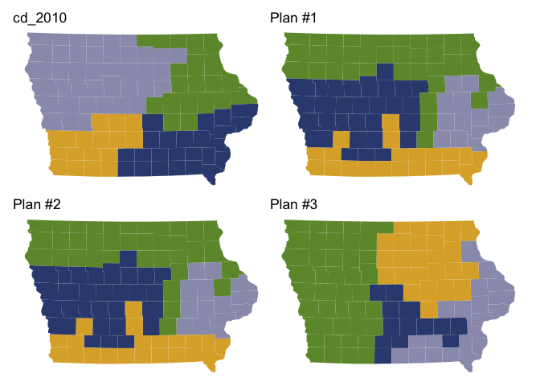
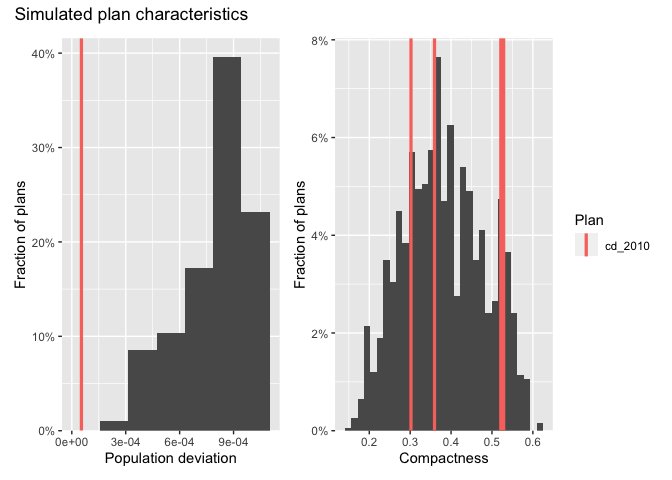
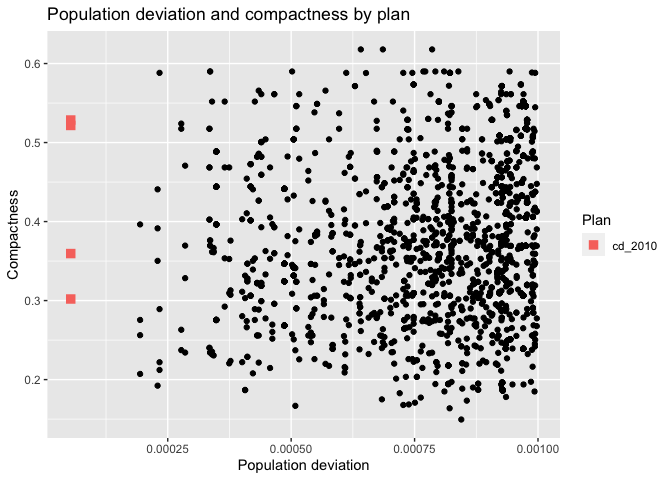
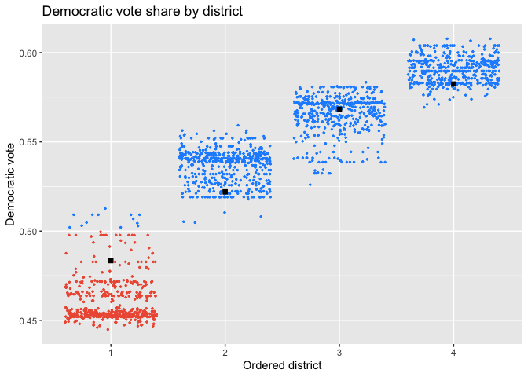

This R package enables researchers to sample redistricting plans from a pre-specified target distribution using Sequential Monte Carlo and Markov Chain Monte Carlo algorithms. The package supports various constraints in the redistricting process, such as geographic compactness and population parity requirements. Tools for analysis, including computation of various summary statistics and plotting functionality, are also included.
Authors:
- Christopher T Kenny, christopherkenny@fas.harvard.edu (Maintainer)
- Cory McCartan, cmccartan@g.harvard.edu
- Ben Fifield, benfifield@gmail.com
- Kosuke Imai, imai@harvard.edu
Contributors:
- Jun Kawahara, jkawahara@i.kyoto-u.ac.jp
- Alex Tarr, atarr@princeton.edu
- Michael Higgins, mjh5@princeton.edu
Papers:
- McCartan, C., & Imai, K. (Forthcoming). Sequential Monte Carlo for sampling balanced and compact redistricting plans. Annals of Applied Statistics.
- Fifield, B., Higgins, M., Imai, K., & Tarr, A. (2020). Automated redistricting simulation using Markov chain Monte Carlo. Journal of Computational and Graphical Statistics, 29(4), 715-728.
- Fifield, B., Imai, K., Kawahara, J., & Kenny, C. T. (2020). The essential role of empirical validation in legislative redistricting simulation. Statistics and Public Policy, 7(1), 52-68.
Installation Instructions
redist is available on CRAN and can be installed using:
install.packages("redist")You can also install the most recent development version of redist (which is usually quite stable) using the remotes package.
if (!require(remotes)) install.packages("remotes")
remotes::install_github("alarm-redist/redist@dev", dependencies=TRUE)Getting started
A basic analysis has two steps. First, you define a redistricting plan using redist_map. Then you simulate plans using one of the algorithm functions: redist_smc, redist_flip, and redist_mergesplit.
library(redist)
library(dplyr)
data(iowa)
# set a 0.1% population constraint
iowa_map = redist_map(iowa, existing_plan=cd_2010, pop_tol=0.001, total_pop = pop)
# simulate 500 plans using the SMC algorithm
iowa_plans = redist_smc(iowa_map, nsims=500)
#> SEQUENTIAL MONTE CARLO
#> Sampling 500 99-unit maps with 4 districts and population between 760,827 and 762,350.After generating plans, you can use redist’s plotting functions to study the geographic and partisan characteristics of the simulated ensemble.
library(ggplot2)
library(patchwork) # for plotting
redist.plot.plans(iowa_plans, draws=c("cd_2010", "1", "2", "3"), shp=iowa_map)
iowa_plans = iowa_plans %>%
mutate(Compactness = comp_polsby(pl(), iowa_map),
`Population deviation` = plan_parity(iowa_map),
`Democratic vote` = group_frac(iowa_map, dem_08, tot_08))
#> Linking to GEOS 3.11.0, GDAL 3.5.3, PROJ 9.1.0; sf_use_s2() is TRUE
hist(iowa_plans, `Population deviation`) + hist(iowa_plans, Compactness) +
plot_layout(guides="collect") +
plot_annotation(title="Simulated plan characteristics")
redist.plot.scatter(iowa_plans, `Population deviation`, Compactness) +
labs(title="Population deviation and compactness by plan")
plot(iowa_plans, `Democratic vote`, size=0.5, color_thresh=0.5) +
scale_color_manual(values=c("black", "tomato2", "dodgerblue")) +
labs(title="Democratic vote share by district")
A more detailed introduction to redistricting methods and the package can be found in the Get Started page. The package vignettes contain more detailed information and guides to specific workflows.